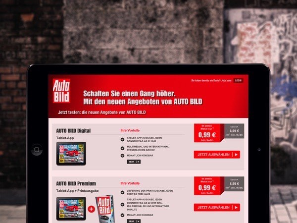
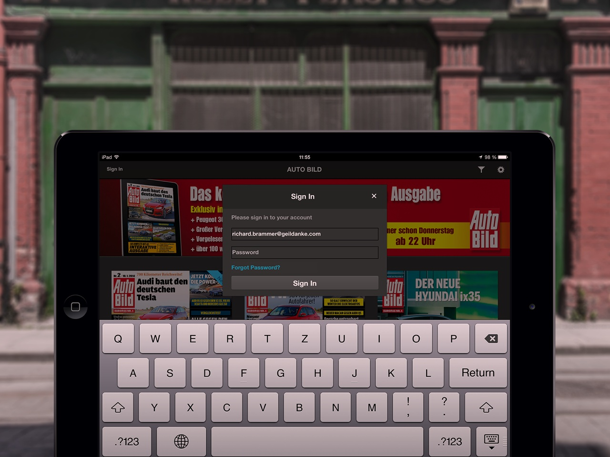

Im Shop auf autobild.de – der von weiteren Projektpartnern implementiert wurde – können Kunden von Axel Springer nun mit ihren Login-Daten ein Abonnement der Auto BILD oder Sport BILD+ kaufen. Dabei bietet Axel Springer neben der reinen Digital-Ausgabe auch ein Bundle mit der Printausgabe an.
Mit den selben Login-Daten (Single-Sign-On) der Premium Content Platform laden sich Leser nach dem Kauf auf autobild.de die Ausgaben kostenlos auf ihr iPad oder Android-Tablet herunter. Mittels der Entitlement-Server-API der Adobe Digital Publishing Suite spart Axel Springer beim Verkauf der Ausgaben über ihren eigenen Shop 30% Provision gegenüber dem Verkauf über Apple, Google oder Amazon.
Die Kommunikation mit dem Lesershop24, sowie die Gutschein-Funktion des Server blieb erhalten. Falls Sie auch an der Entitlement-Server-Technik für Ihre Adobe-DPS-Apps interessiert sind, so schauen Sie sich unsere sofort einsatzbereite Lösung Portier an. Oder schreiben Sie uns, wenn Sie Ihre Backend-Anwendungen an Ihre Apps anbinden wollen.
{% for cta in site.ctas %} {% if cta.lang == page.lang %} {% if cta.id == 'contact-entitlement' %} {% include cta-plain.html %} {% endif %} {% endif %} {% endfor %}